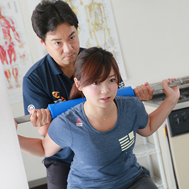

現在、アームリングで活躍しているスタッフの全てがトレーナー未経験者であり、
全員がアームリングで学んだスキルのみで自信を持って仕事に取り組んでおり
ます。
トレーニングが大好きでお客様に貢献する強い熱意があれば、必ずや素晴らしい職業を獲得することが可能です。
当サイト及び、アームリングの公式サイ
トなどをご覧いただき、
”アームリングのパーソナルトレーナーになりたい！”と思っていただきましたら、ぜひチャレンジしていただければと思います。
末永く社会に貢献し活躍を継続していこうと思うなら、 一流の技術というものは必須です。我々が提供するものは、 お客様の目的に応じた“一流の指導技術”です。 当社では、この一流の指導技術というものを追求し、“時代の変化に流されない本質的なトレーニング”を提供しております。 多くの価値ある職業と同様、社会で我々が強く求められているということを実感しながら、 経済的にも自立・安心できる状態であることは、“誇れる職業”の必須条件であると、我々は考えます。
